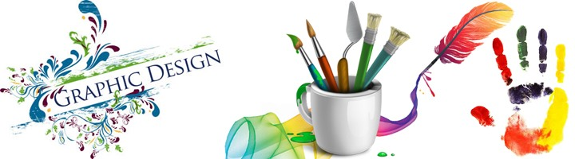

গ্রাফিক্স ডিজাইনে ক্যারিয়ার গড়তে…

গ্রাফিক্স ডিজাইনকে বলা হয় আর্ট অফ কমিউনিকেশন।
আঁকাজোঁকাতে ঝোঁক বেশি! ক্রিয়েটিভ কিছু করতে মন চায়? সময় পেলেই কম্পিউটারের পেইন্ট টুলস, ফটোশপ, ইলাস্ট্রেটর নিয়ে গাছ, পাখি, ফুল, ফল, বাড়ির দৃশ্য বা কারও নাম বা ছবি নিয়ে কাজ শুরু করে দেন? পার্ট-টাইম বা ফুলটাইম কাজ খুঁজছেন? অথবা অনলাইন মার্কেটপ্লেসে কাজ করে অপেক্ষাকৃত বেশি আয় করতে চান? তাহলে ভেবেচিন্তে নেমে পড়ুন গ্রাফিক্স ডিজাইনে। অন্যান্য সব চাকরির থেকে গ্রাফিক্স ডিজাইন পেশাটি সবচেয়ে নিরাপদ ও ঝামেলাবিহীন। নিরাপদ ও ঝামেলাবিহীন বলার কারণ হলো, অন্য সব পেশার বিপরীতে গ্রাফিক্স ডিজাইনারের কোনো কাজের অভাব হয় না। এটা একটা সন্মানজনক পেশাও।
গ্রাফিক্স ডিজাইন কি?
সহজ কথায় বললে গ্রাফিক্স ডিজাইন হল এমন একটি প্রক্রিয়া যার মাধ্যমে যে কোন তথ্য বা ছবি শৈল্পিক উপায়ে উপস্থাপন করা হয়। একজন ডিজাইনার তার কাজের মাধ্যমে খুব সহজেই ব্যবহারকারির মধ্যে প্রভাব ফেলতে পারেন এবং সংক্ষিপ্ত ও নান্দনিক উপায়ে তথ্য পৌঁছে দিতে পারেন।লোগো, ব্র্যান্ডিং, পাবলিকেশন, ম্যাগাজিন, পত্রিকা, বই, থেকে শুরু করে পোস্টার, বিলবোর্ড, ওয়েবসাইট গ্রাফিক্স, সাইন, প্রোডাক্ট প্যাকেজিং পর্যন্ত কোথায় নেই গ্রাফিক্সের ব্যবহার! তুলনামূলকভাবে গ্রাফিক্স ডিজাইনের ইতিহাস খুব বেশিদিনের না হলেও এই টার্মটি সর্বপ্রথম ১৯২২ সালে প্রথম ব্যবহৃত হয়, উদ্ভাবকের নাম উইলিয়াম অ্যাডিসন উইগিংস। আর অ্যাডভার্টাইজিং এর জন্যে গ্রাফিক্স ডিজাইন এবং ফাইন আর্টসের ব্যবহার শুরু হয় বিংশ শতাব্দীর শুরু থেকে। যার মূল উদ্দেশ্য ছিল পণ্য এবং বিভিন্ন সেবার বাজারকরণ কিংবা মার্কেটিং। সেই তখন থেকে আর পেছনে ফিরে তাকাতে হয়নি গ্রাফিক্স ডিজাইনারদের, নিত্যনতুন আইডিয়া আর ডিজাইন নিয়ে গ্রাফিক্স ডিজাইন এগিয়ে এসেছে বহু পথ। কাজকে আরো সহজ করার জন্যে তৈরী হচ্ছে নিত্যনতুন প্রযুক্তি আর সফটওয়্যার, সেই সাথে কাজের ধারারও পরিবর্তন আসছে অনেক। গ্রাফিক্সের পরোক্ষ ব্যবহারে বাড়ছে বিক্রয়ের পরিমাণ, সম্প্রসারিত হচ্ছে ব্যবসাক্ষেত্র। সেই সাথে তাল দিয়ে বাড়ছে ডিজাইনারদের চাহিদাও।
গ্রাফিক্স ডিজাইনার কে?
প্রথমেই জেনে নিই গ্রাফিক্স ডিজাইনার কে বা তার কাজ কী। তার আগে বলি, গ্রাফিক্স ডিজাইন হলো আর্ট বা শিল্প। আসলে গ্রাফিক্স ডিজাইনার হলেন তিনি যিনি গ্রাহকের চাহিদানুযায়ী বেশ কিছু আর্ট, টাইপফেস, ইমেজ এবং অ্যানিমেশন ব্যবহারের মাধ্যমে তার চাহিদা পূরণ করতে সক্ষম হন। এর আউটপুট ডিজিটাল বা প্রিন্ট উভয়ই হতে পারে। আবর্তমান সময়ে সচরাচর পাওয়া বিভিন্ন টুলস ও লেআউট ব্যবহারের মাধ্যমে গ্রাফিক্স ডিজাইনার তার কাজকে আরও বেশি ক্রিয়েটিভ ও গ্রাহকের চাহিদা পূরণ করে বাড়তি তৃপ্তি দিতে পারছেন।
গ্রাফিক্স ডিজাইনার হতে শিক্ষাগত যোগ্যতা:
গ্রাফিক ডিজাইনার হওয়ার জন্য আপনাকে গ্র্যাজুয়েট হওয়ার প্রয়োজন নেই তবে ইংরেজিতে মোটামুটি দক্ষতা থাকলে অনেক ভালো করতে পারবেন। অনলাইনে ঘাঁটাঘাঁটি কিংবা বিদেশি বায়ারের সাথে যোগাযোগের জন্য ইংরেজি জানা একটি পূর্বশর্ত। এ ছাড়া কম্পিউটার অপারেট করা জানতে হবে অর্থাৎ বেসিক কম্পিউটিং সম্পর্কে ধারণা থাকা আবশ্যক। ইন্টারনেট সংযোগ থাকলে খুবই ভালো হয়; তাহলে আপনি যে কোন বিষয়ে অনলাইন থেকে সাহায্য নিতে পারবেন। ডিজাইনের কাজের জন্য প্রয়োজন ইমেজ এডিটিং সফটওয়্যার যেমন অ্যাডোবি ফটোশপ, অ্যাডোবি ইলাস্ট্রেটর প্রভৃতি। যদি আপনার মন হয়ে থাকে সৃজনশীল অর্থাৎ আপনার যদি আঁকাআঁকি করতে ভালো লাগে তাহলে সেটা অবশ্যই প্লাস পয়েন্ট।
গ্রাফিক্স ডিজাইনারের আয়:
প্রশ্নই আসতে পারে, প্রতি মাসে একজন গ্রাফিক্স ডিজাইনারের আয় কত হতে পারে। এ সম্পর্কে ডিজাইনারদের বেতন নিয়ে কাজ করা আন্তর্জাতিক প্রতিষ্ঠান ডিজাইনার স্যালারিজের মতে, একজন গ্রাফিক্স ডিজাইনার প্রতি বছর গ্রাফিক্স ডিজাইন বা এ সম্পর্কিত চাকরি বা কাজ করে ১ লাখ ডলার সেই হিসেবে বাংলাদেশি প্রায় ৮০ লাখ টাকা আয় করতে পারে। বাংলাদেশে গ্রাফিক্স ডিজাইনে ডিপ্লোমাধারীর বেতন মাসে সাধারণত ২০ থেকে ৫০ হাজার টাকা। তবে ব্যাচেলর ফাইন আর্টসে ব্যাচেলর ডিগ্রিধারীদের বেতন মাসিক ১ থেকে দেড় লাখ টাকা পর্যন্ত হতে পারে। এ ছাড়া অনলাইন মার্কেটপ্লেসে আপনি একটি লোগো ডিজাইন করলে ৫ থেকে শুরু করে ২ হাজার ডলার পর্যন্ত হতে পারে। তবে দক্ষতার ক্ষেত্রে ও বেশি ক্রিয়েটিভ কাজ হলে এটি ৫ হাজার ডলার পর্যন্তও হতে পারে। এ ছাড়া একটি ওয়েবসাইটটের ফাস্ট পেজ ডিজাইন করার ক্ষেত্রে ৫০ ডলার থেকে শুরু করে ৩ হাজার ডলার পর্যন্ত পেতে পারেন। মূলত কাজের মান ও ক্রিয়েটিভির ওপরই ভিত্তি করে আপনার আয় নির্ভর করবে।
গ্রাফিক্স ডিজাইনারের কাজের ক্ষেত্র:
যে কোন পণ্য বা সার্ভিসের প্রচারণার জন্য দৃষ্টিনন্দন ও আকর্ষণীয় ডিজাইনের বিকল্প নেই। তাই ডিজাইনারকে কাজ করতে হয় মানুষের বয়স, আচার-আচরণ, পেশা, চাহিদা প্রভৃতি দিকগুলো বিবেচনা করে। আগেই বলা হয়েছে গ্রাফিক্স ডিজাইনারদের কাজের ক্ষেত্র বিস্তৃত।অনলাইন মার্কেটপ্লেসগুলোতে মোটামুটি গ্রাফিক্সের সবধরনের কাজ পাওয়া যায়। তবে বিশেষভাবে যে কাজগুলোর চাহিদা অনেক বেশি, তা নিচে দেয়া হল
১। লোগো ডিজাইন ২। ভিজিটিং কার্ড ডিজাইন ৩। ওয়েবসাইট পিএসডি টেম্প্লেট ডিজাইন ৪। ওয়েব ব্যানার ডিজাইন ৫। বুক কভার ডিজাইন ৬। টি-শার্ট ডিজাইন ৭। পোস্ট কার্ড ডিজাইন ৮। বিজ্ঞাপন ডিজাইন ৯। আইকোন ডিজাইন ১০। ডিজিটাল ইমেজ প্রসেসিং ১১। ব্রুশিয়ার ডিজাইন ১২। মোবাইল অ্যাপ/ইউআই ডিজাইন ইত্যাদিসহ আরো অনেক কাজ পাওয়া যায়।
লোগো ডিজাইন:
লোগো হচ্ছে একটি কোম্পানির পরিচয় বা ব্র্যান্ড। লোগোর মাধ্যমে একটি প্রতিষ্ঠানকে চেনা যায় খুব সহজেই। বিশ্বের নামকরা ব্র্যান্ড অ্যাপল, স্যামসাং, গুগল কিংবা ফেইসবুক এবং বাংলাদেশের ব্র্যান্ড আড়ং, গ্রামীণফোন, প্রাণ কিংবা প্রথম আলো শুধুমাত্র তাদের লোগো দেখেই চিনতে পারা যায়। মানসম্মত দৃষ্টিনন্দন লোগো কিন্তু একজন গ্রাফিক ডিজাইনারকেই তৈরি করতে হয়। শুধু প্রতীক নয় লোগোর সাথে কালারিংও ব্র্যান্ডিং এর ক্ষেত্রে ভূমিকা রাখে। লোগো যেমন লোকাল বিজনেসে প্রয়োজন হয় তেমনি তা অনলাইনেও বহুল চাহিদা সম্পন্ন একটি বিষয়।
গ্রাফিক্স সম্পর্কিত আউটসোর্সিং কাজের ওয়েবসাইটঃ
গ্রাফিক্স প্রতিযোগীতাঃ কিছু ওয়েবসাইট রয়েছে, যেখানে সবাই ক্লাইন্টের চাহিদা অনুযায়ী ডিজাইন সাবমিটের মাধ্যমে প্রতিযোগিতায় অংশ গ্রহণ করে এবং যে বিজয়ী হয়, সে ঐ প্রতিযোগিতার নির্ধারিত অর্থ পায়। এই ধরনের প্রতিযোগিতা হয় এমন উল্লেখ যোগ্য সাইট হচ্ছেঃ
www.99designs.comwww.freelancer.com/contest
ডিজাইন বিক্রিঃ আবার কিছু কিছু সাইট আছে, যেখানে আপনার তৈরি বিভিন্ন আইটেম আপলোড করে রাখবেন এবং সেগুলো বিক্রির মাধ্যমে আয় করতে পারবেন। যেমনঃ
www.graphicriver.netwww.creativemarket.com
www.codegrape.com
www.designcrowd.com
www.freelancer.com/marketplace
বিড করে কাজ : আবার কিছু কিছু সাইট আছে, যেখানে ক্লাইন্টের জবে বিড করে কাজ করা যায়। যেমনঃ
www.upwork.comwww.freelancer.com
www.peopleperhour.com
www.guru.com
www.fiverr.com
যেসব বিষয়ে আপনাকে যত্নবান হতে হবেঃ
-> অবশ্যাই ভালভাবে কাজ শেখা।
-> নিজে থেকে কিছু করার চেষ্টা করা (ক্রিয়েটিভিটি)
-> নিজেকে আপ-টু-ডেট রাখা
-> প্রতিষ্ঠিত ডিজাইনারদের কাজ অনুসরণ করা
-> কাজের স্যাম্পল টেম্পলেট/ পোর্টফলিও তৈরি করে রাখা
-> নিজের মার্কেটিং করা
কিভাবে গ্রাফিক ডিজাইন শিখবেনঃ
গ্রাফিক ডিজাইন আপনি তিনটি মাধ্যমে শিখতে পারেন। ইন্টারনেটে টিউটরিয়াল দেখে দেখে অথবা ভাল কোন ফ্রিল্যান্স গ্রাফিক ডিজাইনারের কাছ থেকে অথবা ভাল কোন প্রতিষ্ঠান থেকে প্রশিক্ষন নিতে পারেন।
১) ইন্টারনেটে টিউটরিয়াল দেখে দেখে:
যেমন আপনি ফটোশপ শিখবেন, তাহলে গুগলে সার্চ দিন “Photoshop tutorial” “Photoshop video tutorial” দেখবেন অনেক টিউটরিয়ার আছে। সেগুলো দেখে শিখতে পারেন তবে এক্ষেত্রে সমস্যা হচ্ছে আপনি সিলিয়াল অনুযায়ী টিউটরিয়াল সব সময় পাবেন না বা কোন একটি বিষয় না বুজলে আপনাকে কেউ এটি সমাধান করে দিবে না যা একেবারে নতুনদের জন্য একটি বড় সমস্যা। ইন্টারনেট থেকে ভিডিও টিউটরিয়াল দেখে শিখতে হলে আপনাকে একটু স্মার্ট হতে হবে। গুগল সার্চে দক্ষতা থাকতে হবে। দ্রুত কোন সমস্যা সমাধানের যোগ্যতা থাকতে হবে। অনেকেই শুুধু ইন্টারনেটে টিউটরিয়াল দেখেই ফ্রিল্যান্স গ্রাফিক ডিজাইনার হয়ে উটতে পারেন।
২) ভাল কোন ফ্রিল্যান্স গ্রাফিক ডিজাইনারের কাছ থেকে:
এটি গ্রাফিক ডিজাইন শেখার সবচেয়ে ভাল পদ্বতি । সবচেয়ে ভাল হচ্ছে গ্রাফিক ডিজাইন কেউ পারে তার কাছ থেকে সরাসরি শেখা, এক্ষেত্রে আপনি ফ্রিল্যান্স মার্কেটপ্লেস (upwork.com freelancer.com peopleperhour.com) অথবা প্রোডাক্ট মার্কেটপ্লেসে (graphicriver.net) কাজ করে এমন একজন গ্রাফিক ডিজাইনারের কাছ থেকে শিখতে পারেন। এভাবে দ্রুত শিখা সম্ভব। যার কাছ থেকে শিখবেন অবশ্যই তার সম্পর্কে ভালোভাবে জেনে নিবেন, মার্কেটপ্লেসে তার প্রোফাইল দেখে নিতে পারেন। তবে এক্ষত্রে একটি ছোটখাট সমস্যা হচ্ছে নতুনরা অনেকাংশেই জানে না কিভাবে একজন ভাল গ্রাফিক ডিজাইনার খুজে পাওয়া যাবে বা অনেকাংশেই সে একজন ডিজাইনারকে মেজারম্যান্ট করতে পারে না। উপরন্তু বেশিরভাগ ফ্রিল্যান্স গ্রাফিক ডিজাইনারবাসায় বসে কাজ করে ফলে তাকে খুখে বের করাও একটু কঠিণ।
২) ভাল কোন প্রতিষ্ঠান থেকে:
ভাল কোন প্রতিষ্ঠান থেকেও গ্রাফিক ডিজাইন শেখা যেতে পারে তবে এক্ষেত্রে সমস্যা হচ্ছে বাংলাদেশে ৯০% প্রতিষ্ঠানই ভাল প্রশিক্ষন দেয় না সুতরাং আপনার এখানে প্রতারিত হওয়ার সম্ভাবনা আছে। তবে দেশে কয়েকটি ভালো প্রশিক্ষন প্রতিষ্ঠানও রয়েছে। ভালো প্রতষ্ঠিান বাছাই করতেটি নিচের কয়েকটি স্টেপ আপনি অনুসরন করতে পারেন –
ক. প্রতিষ্ঠান ওয়েবসাইট, ফেসবুক, টুইটার, গুগল প্লাস পেজে তাদের তথ্য দেখুন। একটি ভালো প্রতিষ্ঠানের অবশ্যই ইনফরমেটিভ ওয়েবসাইট থাকে।
খ. প্রতিষ্ঠান প্রতিষ্ঠাতা এবং পরিচালকদের খোজ নিন, দেখুন তারা যতাযথ আইটি এক্সপার্ট কিনা।
গ. আপনি যে বিষয় শিখবেন সে বিষয়ের প্রশিক্ষকদের সম্পর্কে খোজ নিন। তাদের মার্কেটপ্লেসের প্রোফাইল/ সাকসেস জানার চেষ্ঠা করূন।
ঘ. প্রতিষ্ঠান প্রাক্তন ছাত্রদের ফিডবেক জানার চেষ্ঠা করূন।
যারা এখনো ভাবছেন কি করা যায়, দ্বিধা-দ্বন্দে দিন কাটাচ্ছেন তারা নিঃসন্দেহে শুরু করে দিন গ্রাফিক্স ডিজাইন শেখার কাজ। দেশে বিদেশে আপনার জন্য কাজের ক্ষেত্র প্রস্তুত। উচ্চমানের চাহিদা সম্পন্ন একটি প্রফেশন হচ্ছে গ্রাফিক ডিজাইন। কাজেই গ্রাফিক্স ডিজাইনের আপনার আগ্রহ থাকলে একেই আপনি নিজের পেশা হিসেবে গ্রহণ করে নিতে পারেন।